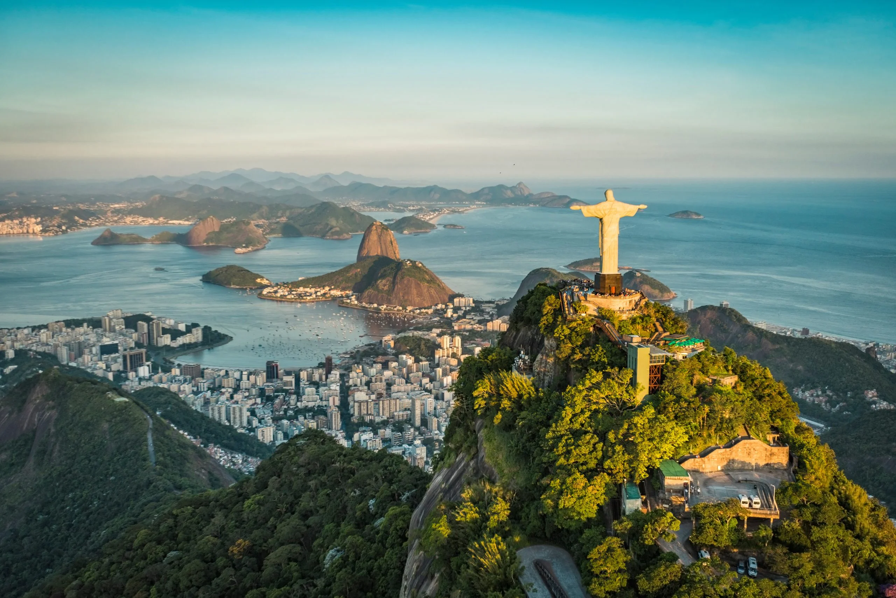
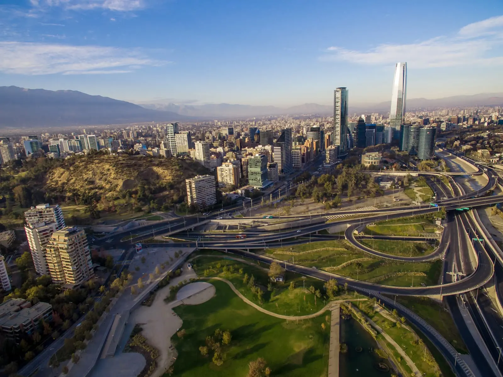

Argentina es un país de contrastes, desde la imponente Patagonia en el sur hasta las vibrantes ciudades del norte. Buenos Aires, la capital, cautiva con su mezcla de cultura europea y latinoamericana, ideal para quienes buscan arte, gastronomía y vida nocturna. Aventura y naturaleza se encuentran en lugares como el Parque Nacional Los Glaciares, con el majestuoso glaciar Perito Moreno, y las Cataratas del Iguazú, en la frontera con Brasil. Además, la región vinícola de Mendoza ofrece una experiencia única para los amantes del vino.
Brasil

Brasil es un destino de alegría, playas paradisíacas y cultura vibrante. Río de Janeiro, famosa por su icónica playa de Copacabana y el Cristo Redentor, es un lugar lleno de energía, especialmente durante el Carnaval. Las selvas de la Amazonía y las imponentes Cataratas de Iguazú, en la frontera con Argentina, ofrecen experiencias de ecoturismo excepcionales. Las playas del noreste, como las de Bahía y Fortaleza, son ideales para quienes buscan sol, mar y un ambiente relajado.
Chile

Chile es un país que ofrece una sorprendente diversidad de paisajes en un territorio largo y estrecho. Desde el desierto de Atacama, uno de los más áridos del mundo, hasta la región de los lagos y la impresionante Patagonia chilena, con sus montañas y glaciares. Santiago, la capital, es un buen punto de partida, con una gran oferta cultural y gastronómica. Isla de Pascua, con sus enigmáticas estatuas moái, es otro de los grandes atractivos, junto con la posibilidad de hacer senderismo en parques naturales como Torres del Paine.
Paquetes de la temporada
Paquete Turístico: Argentina - "Escapada a Buenos Aires y Tigre"
Día 1: Llegada a Buenos Aires
Día 2: Excursión a Tigre y Delta del Paraná
Día 3: Visita a la Recoleta y despedida
Incluye:
Traslados aeropuerto-hotel-aeropuerto.
Excursiones y entradas a los lugares mencionados.
Alojamiento en hotel 3 estrellas.
Desayuno diario y una cena con show de tango.
Guía local en español.
Paquete Turístico: Brasil - "Río de Janeiro Exprés"
Día 1: Llegada a Río de Janeiro
Día 2: Tour por la ciudad y playas
Día 3: Despedida y compras
Incluye:
Traslados aeropuerto-hotel-aeropuerto.
Excursiones y entradas a los principales puntos turísticos.
Alojamiento en hotel 3 estrellas.
Desayuno diario y una cena típica.
Guía local en español.
Paquete Turístico: Chile - "Santiago y Valparaíso en 3 Días"